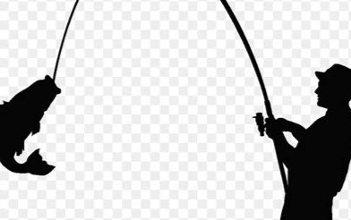
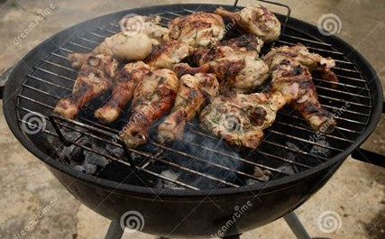

I will have a list of things I have accomplished
with my hobbies.
Fishing

Started when I was a kid going fishing with my friends.
Was able to teach my children to fish, help me spend time with them.
Became somemy busy life.thing that I can do to relax and get away from
Weight Lifting
Was introduced to weightlift while play High School Football
Once I graduated high school I joined the military and continued the
weight lifting on my own.
Weight lifting became away I was able to work off stress while in
the military. It became a got way to manage my stress throughout my
life.
As I am older it has also became away to keep me try and keep my body
Barbecuing
Being from the state of Texas, BBQ'ing is just something you
are always around. As a kid I watch my dad and our family members
bbq on weekends and try to master the perfect brisket, ribs and other meats.
As I got older I start bbqing for my own family and friends. They was fun as
we would have people over on weekends to hang and just bbq with a few adult drinks.
It was a good way to stay in touch with family and friends
As my children has grown up I have tried to past this Texas tradition on to them
so they can us this to stay in touch with friends and family.

Studying Christianty
I started going to church and was saved about 8 years agao. As
started reading the Bible I found the words I was reading as comfort
and a way that I should be living mylife.
After studying the bible for a year I decide to get saved and baptised.
This has change the way I viewed life.
I have read several differnt books based on the bible and it principles, which has help me
understand myself. I also gotten a better understanding of Chrisianty.
Watching Football
The first time I remember watching football was when I was about
8 years old spending time with my dad on a Sunday afternoon.
Watching football was the most time my father and I spent together
and this got me so intriqued about the game, that I read every book they had on every
team in our scholl library as a kids. At that time they only had 28 teams.
My intrest in football turn into my asking my parents to let me play peewee
football. I ended up playing organized footbal from 8 yrs old to my senior year in footbal.
I believe this helped me have a successful career in the US Navy.